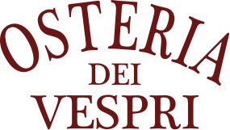
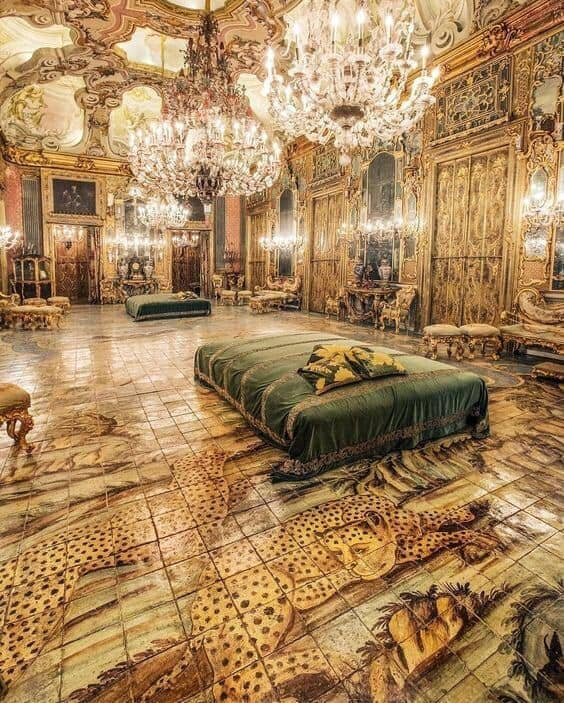
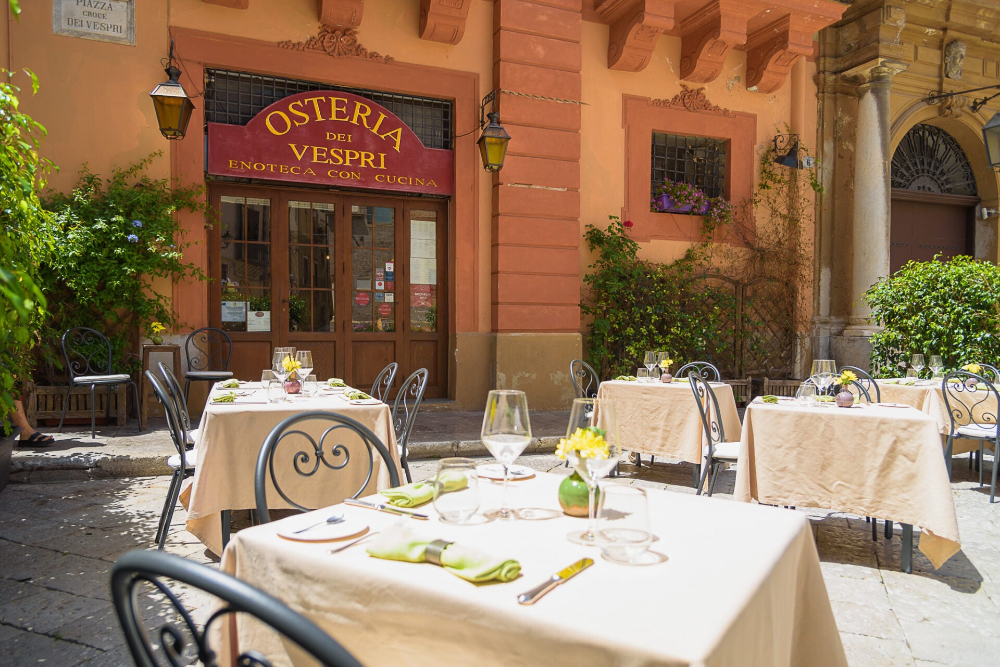
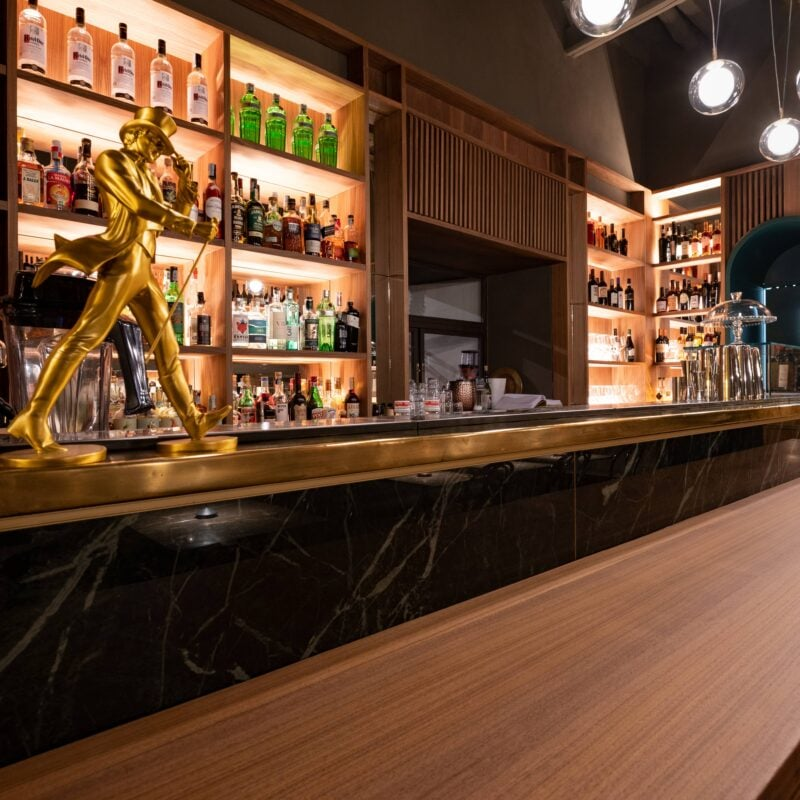
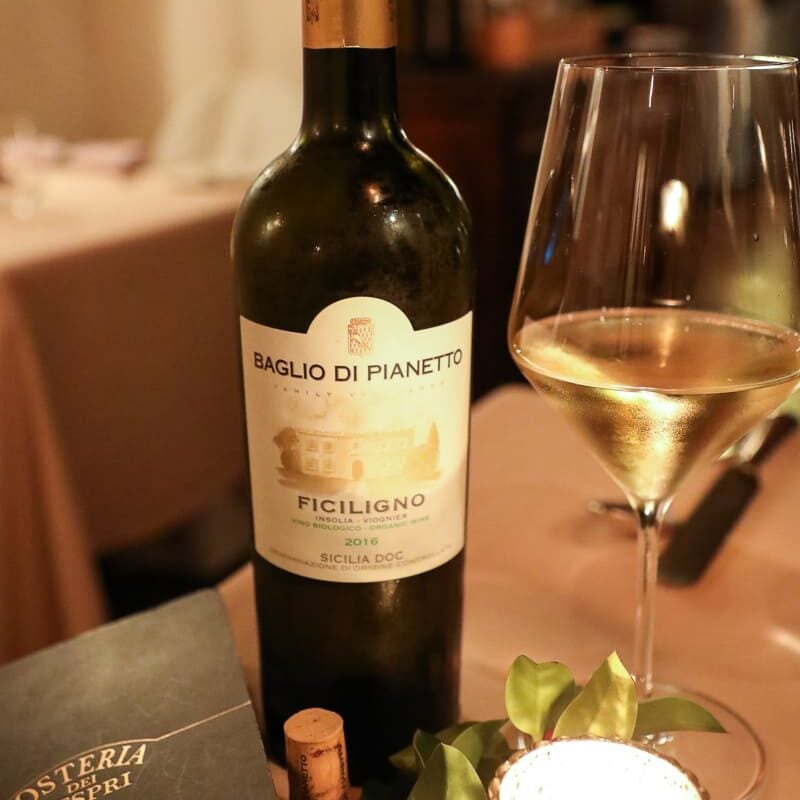
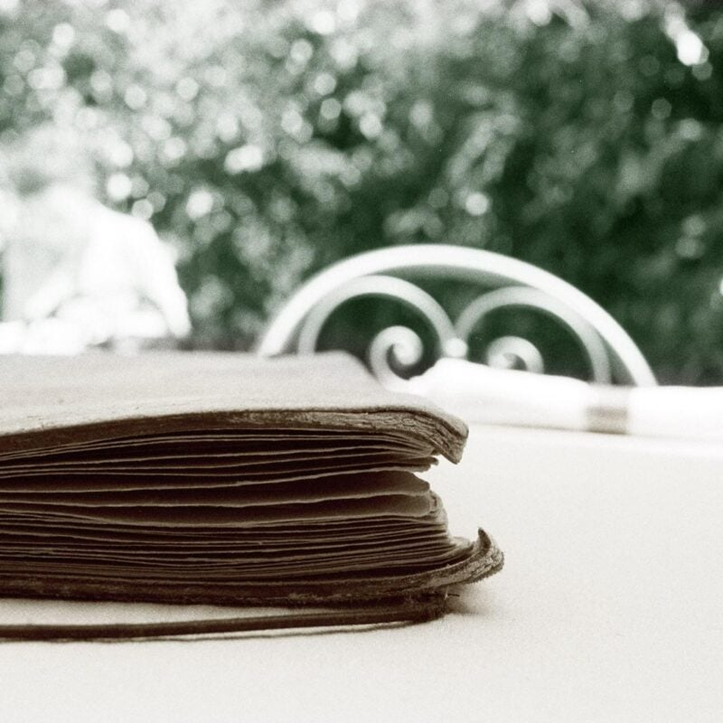
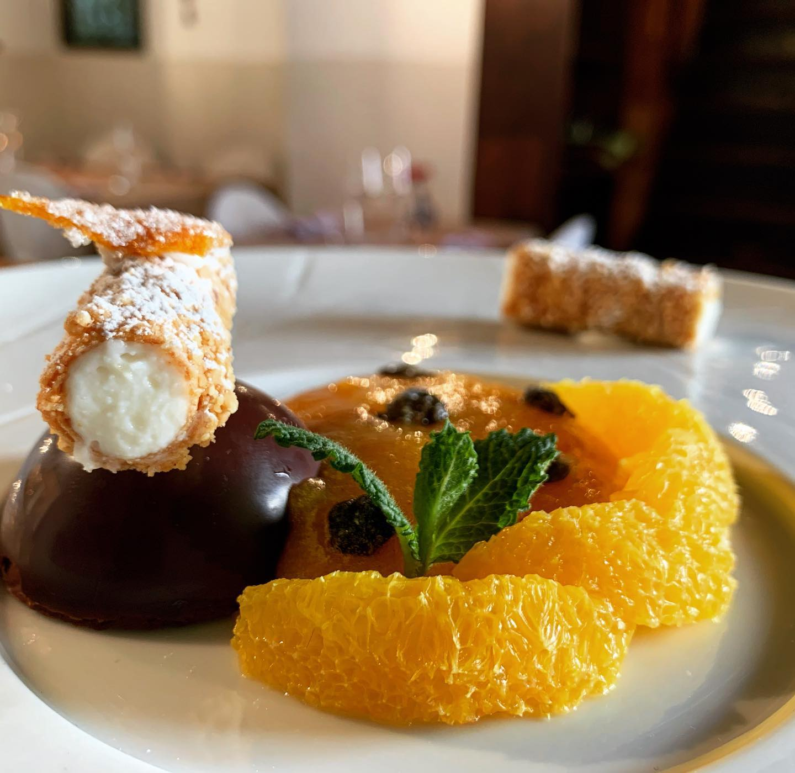
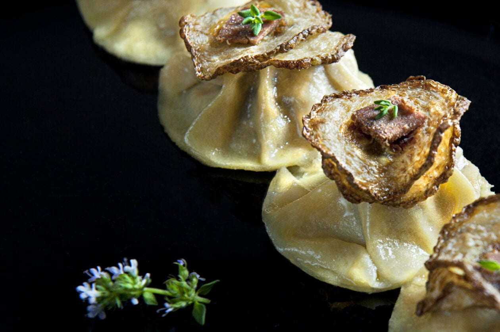
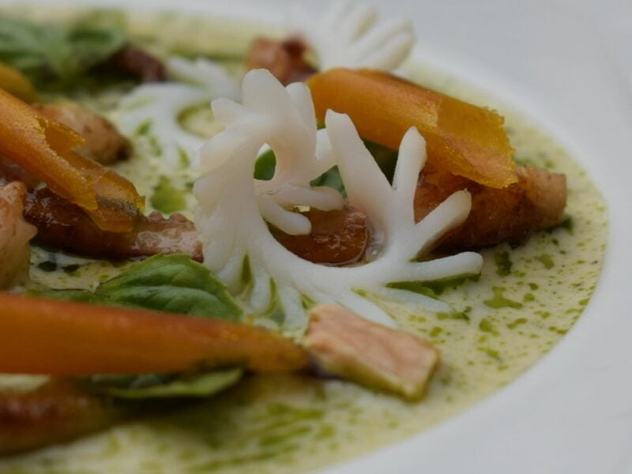
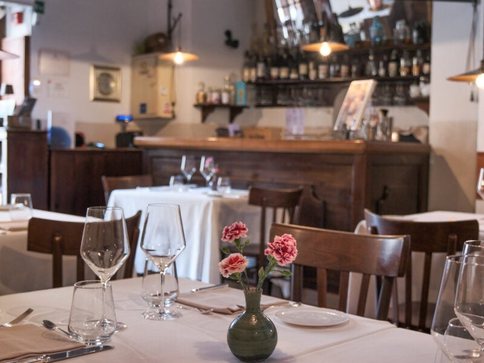

SECO ONBOARDINGOsteria dei
Vespri
Cucina siciliana contemporanea dentro Palazzo Gangi Valguarnera, dove Visconti girò il ballo del Gattopardo. Dal 1999, nel cuore della Kalsa.
Non un ristorante
qualsiasi.
Avvolta dalle mura dell'antico Palazzo Gangi, l'Osteria dei Vespri osserva silenziosa i passanti tra Piazza Croce dei Vespri e la storica Galleria d'Arte Moderna. È qui, nel 1963, che Luchino Visconti girò la sequenza del gran ballo ne "Il Gattopardo".

Una storia rara,
raccontata poco online.
Il sito attuale elenca menu e cantina, ma non racconta perché mangiare qui sia un'esperienza diversa: la sala del Gattopardo, la cucina di Alberto Rizzo, i 650 vini scelti uno per uno. Chi non conosce già il posto non coglie il valore prima di prenotare.
Il palazzo non si vede
Nessuna narrazione della location: il legame con Visconti e il Gattopardo resta una nota a margine.
Cucina senza volto
La ricerca di Alberto Rizzo tra tradizione e tecnica non emerge: sembra un menu come tanti altri.
Tra affreschi e bicchieri di vino.




Territorio e tecnica,
senza tradire il piatto.




Una landing che
racconta perché prenotare.
Il palazzo, in primo piano
Una sezione dedicata alla storia: Palazzo Gangi, il Gattopardo, il 1999.
La cucina di Alberto Rizzo
I piatti raccontati come ricerca, non solo come voci di menu.
La cantina come argomento
650 etichette non sono un dettaglio: sono la prova della cura del posto.
"Si mangia nella sala dove Visconti girò il ballo del Gattopardo."
Headline proposta per la landing
Se vogliamo che tutto rimanga com'è, bisogna che tutto cambi.
La landing, in costruzione.
Si prega di
prenotare.
Osteria dei Vespri — Piazza Croce dei Vespri 6, Palermo.